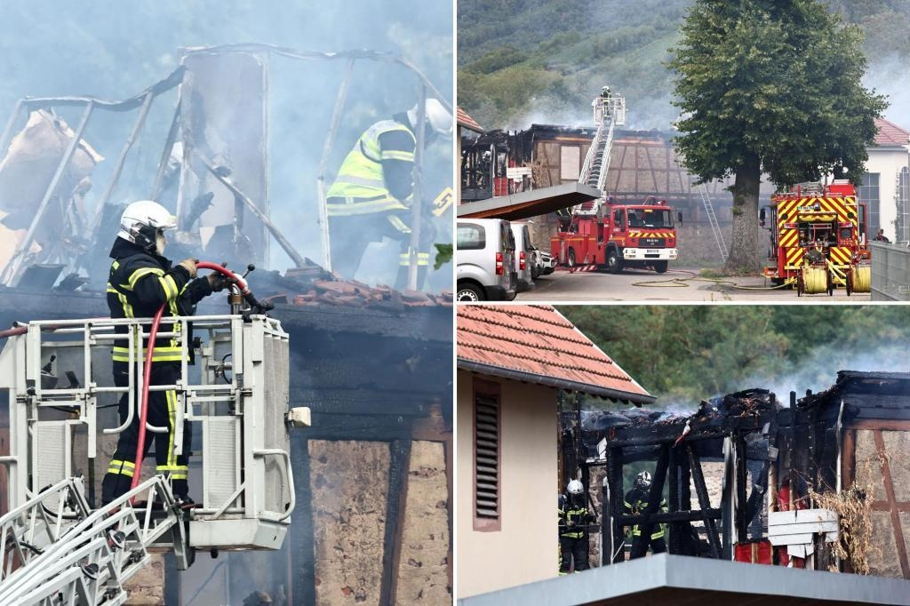

French authorities say 11 are missing after fire at home for disabled peopleFrench authorities say 11 adults are missing after a fire broke out early on Wednesday in a holiday home for people with disabilities in eastern France while 17 others have been evacuated. Interior minister Gerald Darmanin tweeted that “early this morning, a fire broke out in a facility for disabled people” in the small town of Wintzenheim, close to the border with Germany. “Despite the rapid and courageous intervention of the fire department … several casualties are reported,” he said. Rescue operations were still ongoing. The local administration of the Haut-Rhin region said the fire broke out at 6:30 a.m. in private accommodation in Wintzenheim. Seventeen people were evacuated, including 1 person sent to hospital in a “relative emergency.” Eleven people from the group of adults, who usually live in the city of Nancy, in eastern France, are still missing, the statement said. “The building was being used … for their vacation,” the statement said. The fire department deployed 76 firefighters, 4 fire engines, 4 ambulances to contain the blaze and treat the victims. Forty police officers were also mobilized. The fire was quickly brought under control, the statement said. Firefighters work to extinguish a fire which erupted at a home for disabled people in Wintzenheim near Colmar, eastern France, on August 9, 2023. AFP via Getty Images French authorities say 11 adults are missing after the fire broke out at the home for disabled people in Wintzenheim near Colmar, eastern France, on August 9, 2023. AFP via Getty Images Firefighters and sniffer dogs arrive at the site of a fire which erupted at the home for disabled people in Wintzenheim near Colmar, eastern France, on August 9, 2023. AFP via Getty Images The fire department deployed 76 firefighters, 4 fire engines, and 4 ambulances at the home for disabled people in Wintzenheim on August 9, 2023. AFP via Getty Images |
 |